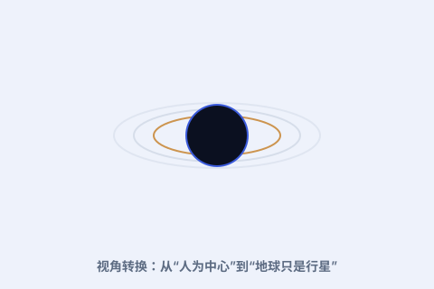

一、此前的宇宙观
在中世纪，托勒密的地心说加上“地球静止在中心”的观念，几乎是不可动摇的常识，还和宗教信仰绑在一起。天空，是为人类而存在的舞台。

二、视角转换
哥白尼把观察者“降格”为一颗普通行星上的居民。一旦承认地球也会动、也只是行星之一，许多旧难题（逆行、亮度变化）立刻变得自然。
三、连锁反应
开普勒用椭圆修正了哥白尼的圆轨道；伽利略用望远镜找到证据；牛顿用引力把这一切统一。哥白尼是点燃引线的人。
四、今天我们怎么看
今天我们知道太阳也不是宇宙中心（它绕银河系转）。但“人不是宇宙的特殊主角”这一课，从哥白尼开始，成了现代科学最谦逊也最有力的起点。